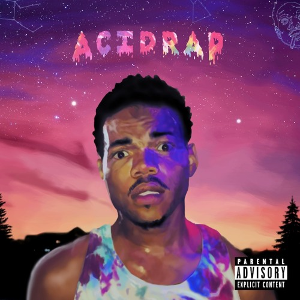

Acid Rap
Chance the Rapper


 Acid Rap is the second mixtape by American rapper Chance the Rapper. It was released on April 30, 2013, as a free digital download. In July 2013, the album debuted at number 63 on the Billboard Top R&B/Hip-Hop Albums, due to bootleg downloads on iTunes and Amazon not affiliated with the artist.[1] The mixtape has been certified "diamond" on mixtape site Datpiff, for garnering over 10,000,000 downloads.[2] It was rereleased on streaming services on June 21, 2019, alongside his 2012 mixtape 10 Day.
Acid Rap is the second mixtape by American rapper Chance the Rapper. It was released on April 30, 2013, as a free digital download. In July 2013, the album debuted at number 63 on the Billboard Top R&B/Hip-Hop Albums, due to bootleg downloads on iTunes and Amazon not affiliated with the artist.[1] The mixtape has been certified "diamond" on mixtape site Datpiff, for garnering over 10,000,000 downloads.[2] It was rereleased on streaming services on June 21, 2019, alongside his 2012 mixtape 10 Day.
- Good Ass Intro
- Pusha Man
- Cocoa Butter Kisses
- Juice
- Lost
- Everybody’s Something
- Interlude (That’s Love)
- Favorite Song
- NaNa
- Smoke Again
- Acid Rain
- Chain Smoker
- Everything’s Good (Good Ass Outro)